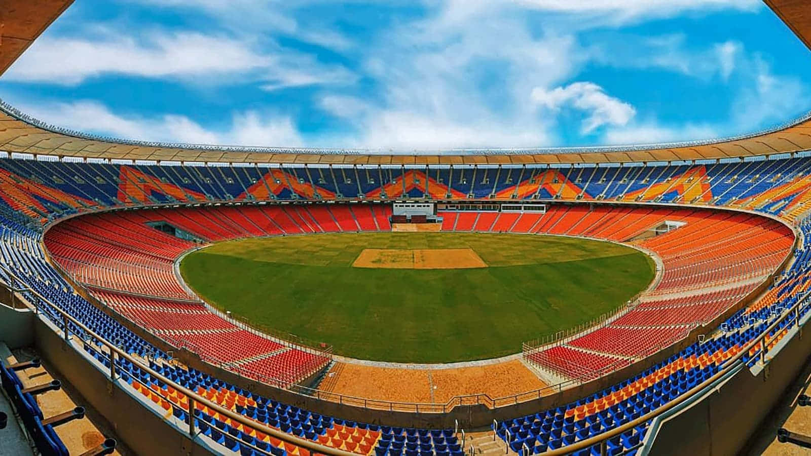

Beyond the Boundary
Home
Research
Research
References
Explore the latest research in the field of boundary studies.
West Indies Cricket Archives
ESPNcricinfo. (n.d.). Caribbean cricket history.
ESPN
Cricket West Indies. (n.d.). West Indies cricket archives.
Fire in Babylon
Fire in Babylon [Film]. (2010). Passion Pictures.
The Cricket War
Haigh, G. (1993). The cricket war: The inside story of Kerry Packer’s World Series Cricket. Text Publishing.
Beyond a Boundary
James, C. L. R. (1963). Beyond a boundary. Hutchinson.
Scholar Blog
Blogs, Scholar. “In the Era of Decolonization, West Indies Cricketers Refused to “Grovel.”” Jacobin.com,
The UWI Press
Broomes, Margaret, and Matthew Forde. A Select Annotated Bibliography Compiled and Prepared By the UWI Press. 2017.
International Cricket Council
Caribbean, Exceptional. “International Cricket Council.” Icc-Cricket.com, 2017.
Times of India
Desk, TOI Sports. “From Outrage to Victory: Sunil Gavaskar’s Infamous Walkout in 1981 Melbourne Test.” The Times of India, Times Of India, 13 Sept. 2024. Accessed 4 May 2025.
ESPN Cricket Info
Hogg, Nicholas. “Dear West Indies Cricket.” ESPNcricinfo, 4 Nov. 2014. Accessed 4 May 2025.
Global Voices
Mendes-Franco, Janine . “West Indies Fans Rally against the Region’s “Corrupted” Cricket Board after T20 Victories.” Global Voices, 7 Apr. 2016. Accessed 4 May 2025.
Loop News
News, Loop. “West Indies Strike Early as Bangladesh Crawl to 69-2 in Rain-Hit Test.” Loop News, Dec. 2024. Accessed 4 May 2025.
West Indies Cricket
“OUR HISTORY | Windies Cricket News.” Windies.
UK Parliament
UK Parliament. “The West Indian Colonies and Emancipation.” Www.parliament.uk.